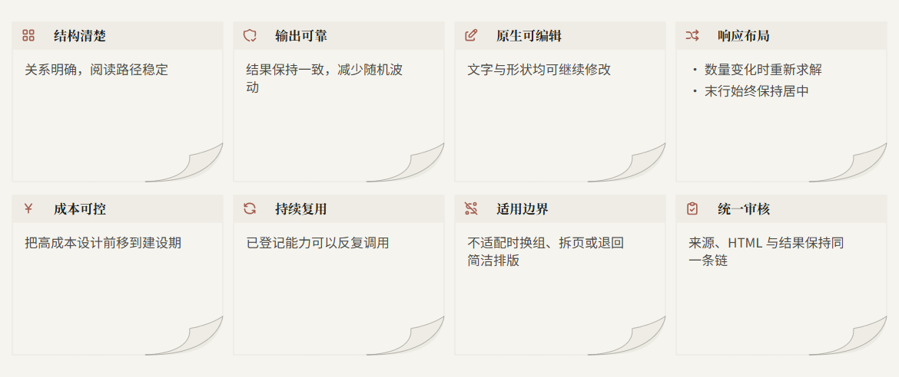
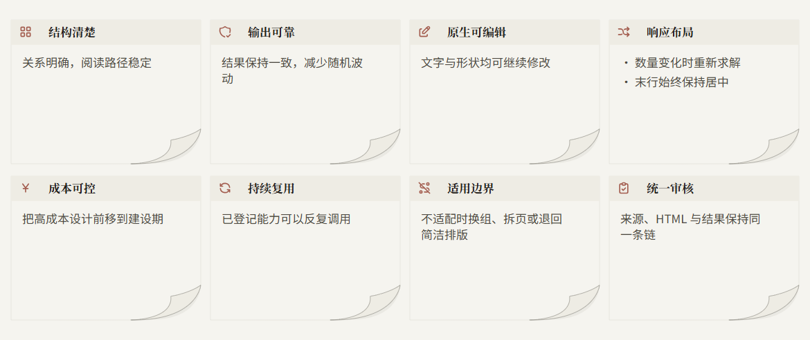
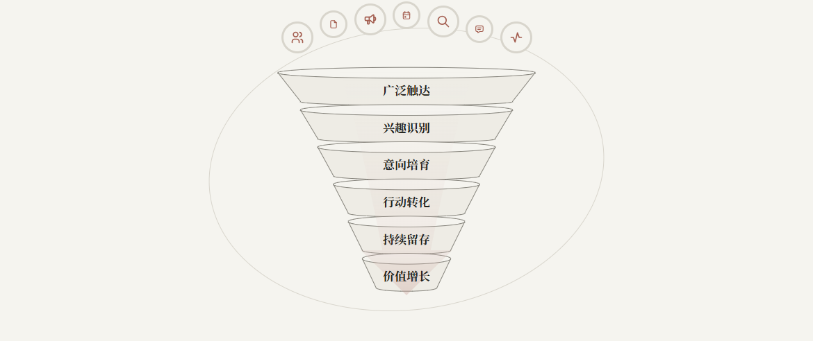
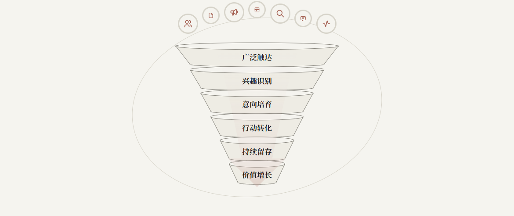
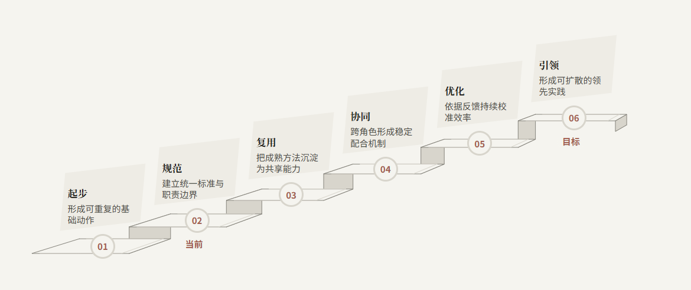
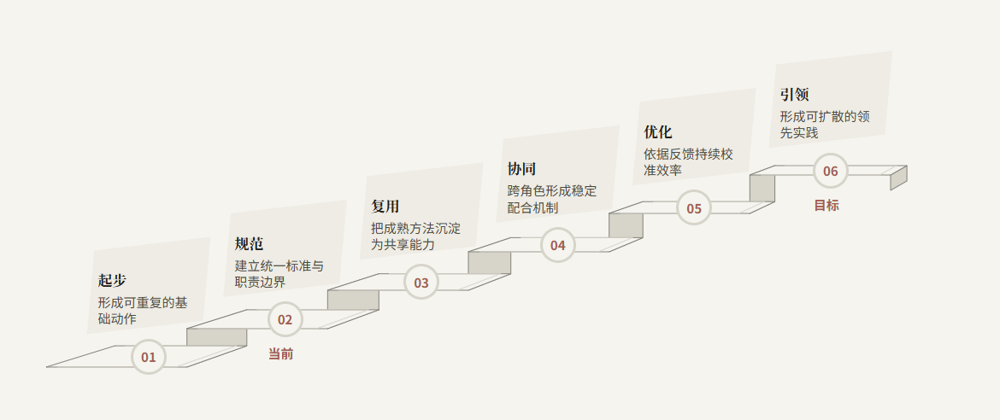

当前示例

左侧是当前中性示例；右侧只改变颜色来源。内容、尺寸、形状、字体和字号完全相同。点击图片可看原尺寸。






右侧唯一颜色输入是米色 #F5F4EF。背景、承载面、边界、轮廓、深文字、正文和图标，全部由这一个颜色按固定的明度与色相规则生成。没有额外读取砖红强调色，也没有沿用旧 Skin 的独立文字色。
右侧以原来的米色层次和暖色小图标为拟合目标：图标颜色由主色的色相偏移与明度、饱和度比例自动生成，不是第二个输入颜色。
这是独立 HTML 对比实验，尚未替换结构库，也未重新验证整页调用或 PPTX。当前先验证米色主调；其他深浅主色的自动配色仍需后续验证。